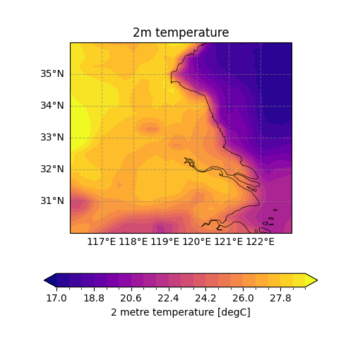
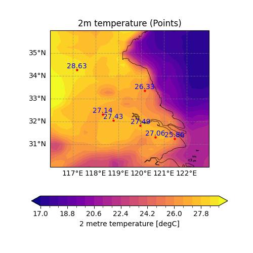

Note
Go to the end to download the full example code.
Interpolate grid data to station data¶
This example demonstrates how to interpolate 2m temperature data from a regular grid
(ERA5 reanalysis data) to specific point locations (cities in Eastern China) using
the easyclimate.interp.interp_mesh2point function from the easyclimate package.
The workflow includes:
Loading and visualizing the grid data
Creating a DataFrame with point locations
Performing the interpolation
Visualizing the results with interpolated values
Before proceeding with all the steps, first import some necessary libraries and packages
import easyclimate as ecl
import xarray as xr
import cartopy.crs as ccrs
import numpy as np
import pandas as pd
Load 2m temperature data from a NetCDF file (ERA5 reanalysis data) The data contains temperature values on a regular latitude-longitude grid
Tip
You can download following datasets here: Download js_t2m_ERA5_2025052000.nc
t2m_data = ecl.open_tutorial_dataset("js_t2m_ERA5_2025052000").t2m
t2m_data
js_t2m_ERA5_2025052000.nc ━━━━━━━━━━━━ 100.0% • 40.5/40.5 • 5.8 MB/s • 0:00:00
kB
Create a basemap plot focused on Eastern China region
fig, ax = ecl.plot.quick_draw_spatial_basemap(figsize=(5, 5))
ax.set_extent([116, 123, 30, 36], crs = ccrs.PlateCarree())
# Select and plot temperature data for the region of interest
draw_data = t2m_data.sel(lon = slice(100, 140), lat = slice(45, 25))
draw_data.plot.contourf(
ax = ax,
transform=ccrs.PlateCarree(),
cbar_kwargs = {'location': 'bottom'},
levels = np.linspace(17, 29, 21),
cmap = "plasma"
)
ax.set_title("2m temperature")

Text(0.5, 1.0, '2m temperature')
Create a DataFrame containing city locations (longitude and latitude) These are the points where we want to interpolate temperature values
data = {
"Site": ["Nanjing (南京)", "Suzhou (苏州)", "Shanghai (上海)", "Chuzhou (滁州)", "Changzhou (常州)", "Xuzhou (徐州)", "Yancheng (盐城)"],
"lon": [118.7788631, 120.6212881, 121.4700152, 118.3139455, 119.9691539, 117.1810431, 120.1577019],
"lat": [32.0438284, 31.311123, 31.2312707, 32.3027377, 31.8122623, 34.2665258, 33.349559]
}
df = pd.DataFrame(data)
df
Use interp_mesh2point to interpolate grid values to point locations Parameters:
t2m_data: Input grid data (xarray DataArray)df: DataFrame with point locationslon/lat_dim_mesh: Name of lon/lat dimensions in grid datalon/lat_dim_df: Name of lon/lat columns in DataFrame
df_interp = ecl.interp.interp_mesh2point(
t2m_data, df,
lon_dim_mesh = "lon",
lat_dim_mesh = "lat",
lon_dim_df = "lon",
lat_dim_df = "lat"
)
df_interp
Create a combined plot showing both the grid data and interpolated points
proj_trans = ccrs.PlateCarree() # Coordinate reference system for transformations
fig, ax = ecl.plot.quick_draw_spatial_basemap(figsize=(5, 5))
ax.set_extent([116, 123, 30, 36], crs = proj_trans)
draw_data = t2m_data.sel(lon = slice(100, 140), lat = slice(45, 25))
# Plot the grid data again for reference
draw_data.plot.contourf(
ax = ax,
transform=ccrs.PlateCarree(),
cbar_kwargs = {'location': 'bottom'},
levels = np.linspace(17, 29, 21),
cmap = "plasma"
)
# Plot the point locations as red dots
ax.scatter(
df_interp["lon"],
df_interp["lat"],
transform = proj_trans,
color = 'r',
s = 5
)
# Add temperature values as text labels near each point
for i, row in df_interp.iterrows():
ax.text(
row["lon"],
row["lat"],
str(np.round(row["interpolated_value"], decimals=2)), # Rounded to 2 decimal places
transform=proj_trans,
fontsize=10,
ha='center', # Horizontal alignment
va='bottom', # Vertical alignment
color='blue'
)
ax.set_title("2m temperature (Points)")

Text(0.5, 1.0, '2m temperature (Points)')
Total running time of the script: (0 minutes 1.898 seconds)